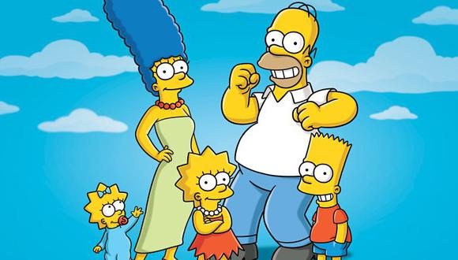

 Es una serie animada de una familia estadounidence un poco disfuncional.
 en esta serie de netflix el protagonista es el diablo
que se va a tomar unas vacaciones de el infierno a los Angeles Califirnia y se enamora de una detective.
en esta serie de netflix el protagonista es el diablo
que se va a tomar unas vacaciones de el infierno a los Angeles Califirnia y se enamora de una detective.
 esta serie anime habla de unas personas con talentos magicos que son
denominados como los pecados capitales ellos luchan contra la raza demoniaca.
esta serie anime habla de unas personas con talentos magicos que son
denominados como los pecados capitales ellos luchan contra la raza demoniaca.
tambien es una serie de netflix en la que se evidencia la vida de unos estidiantes reveldes de una escuela pribada en españa en la que entran unos jovenes de bajos recursos becados a lo largo de la serei ocurren una serie de acesinatos.
es la reconocida serie de peliculas de magia en la que harry el protaginista es huerfano y a lo largo de su vida le toca pasar varias pruebas y batallas con un mago tenebroso.